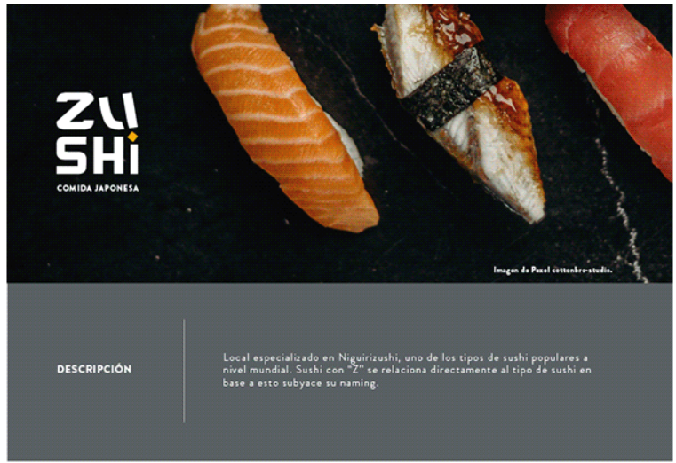
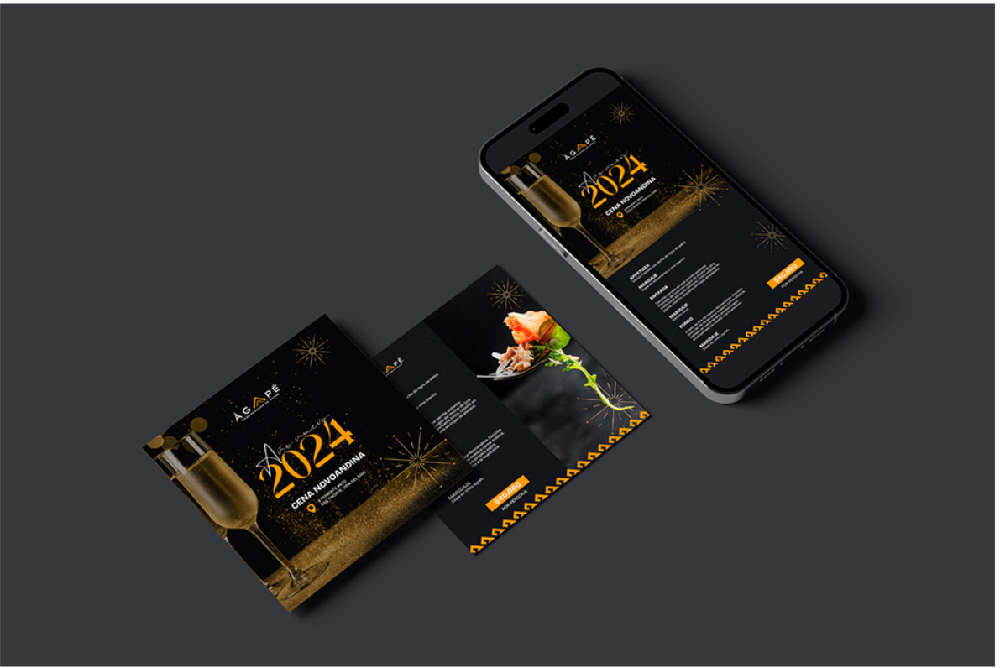
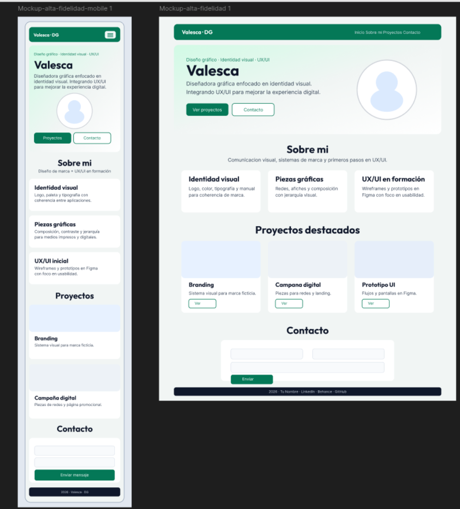

Identidad para marca ficticia
Logo, colores, tipografías y aplicaciones en mockups (tarjetas, redes, merchandising).
Ver detalleDiseño gráfico · Identidad visual · UX/UI
Diseñador gráfico enfocado en identidad visual: logos, sistemas de marca, color y tipografía aplicados con criterio. Estoy incursionando en UX/UI, prototipando en Figma y pensando la experiencia más allá del solo aspecto visual.
Ver proyectos Caso de estudio Contactar
Me interesa que cada pieza comunique con claridad: desde la primera idea hasta las aplicaciones de marca. Hoy profundizo en identidad y empiezo a integrar investigación de usuario, arquitectura de información y prototipos en mis procesos.
Naming visual, logo, paleta, tipografía y manual de marca para que la marca se vea coherente en cualquier soporte.
Afiches, redes sociales, packaging o editorial: composición, contraste y jerarquía para guiar la mirada.
Wireframes, flujos y prototipos en Figma; enfoque en usabilidad, accesibilidad básica y coherencia con la identidad del producto.
Selección de trabajos académicos y personales.

Logo, colores, tipografías y aplicaciones en mockups (tarjetas, redes, merchandising).
Ver detalle
Piezas para redes y landing: mensaje, jerarquía visual y extensión de la guía de marca al entorno web.
Ver detalle
Flujo de pantallas, componentes y prototipo navegable; decisiones alineadas con la identidad y la usabilidad.
Ver detalleProyecto integrador: de la identidad visual y el prototipo a una web funcional con HTML, CSS y Bootstrap. Incluye proceso, métricas de calidad y aprendizajes documentados abajo.
Leer caso de estudio completoCaso de estudio
Rol: diseño gráfico e identidad visual, maquetación web y criterios UX/UI en formación. Proyecto académico alineado al módulo de diseño visual / desarrollo web y a la entrega de empleabilidad.
Se planteó el diseño y la implementación de una landing page como portfolio personal: presentación, habilidades, proyectos destacados y contacto. El entregable debía ser responsive, con HTML semántico, estilos en CSS, uso de Bootstrap como apoyo a la rejilla y componentes, y documentación de decisiones de color, tipografía y estructura. El sitio debía reflejar un perfil de diseño gráfico con foco en identidad visual e incursión en UX/UI.
Traducir una identidad coherente (paleta, tipografías, tono) a una interfaz web usable en móvil, tablet y escritorio, sin perder jerarquía ni legibilidad. El reto fue alinear prototipo y resultado final, mantener un código ordenado para quien recién integra desarrollo front-end, y comunicar con honestidad el nivel en UX/UI (en formación) frente al fuerte peso en diseño gráfico e identidad.
Stack y herramientas empleadas en el proceso y en la implementación:
Sustituye o elimina la última según dónde publiques el sitio.
Indicadores adaptados al tipo de proyecto (diseño + front básico). Ajusta números si llevas registro real.
| Indicador | Resultado |
|---|---|
| Breakpoints probados | 3 anchos (móvil, tablet, escritorio) |
| Secciones navegables | 4 bloques principales + caso de estudio documentado |
| Proyectos visibles en portafolio | 3 tarjetas + 1 caso de estudio destacado |
| Accesibilidad básica | Etiquetas semánticas, alt en imágenes, contraste revisado en textos principales |
| Iteraciones de diseño | Wireframe → alta fidelidad → implementación (ajusta si documentaste más vueltas) |
Este proyecto muestra de forma integrada lo que puedo aportar en entornos digitales: criterio de marca, comunicación visual clara y capacidad de llevar decisiones de diseño a una interfaz web manteniendo usabilidad y coherencia. Es representativo de mi transición hacia prácticas de UX/UI y demuestra que puedo documentar proceso, justificar herramientas y trabajar con vocabulario común frente a equipos de producto o desarrollo.
Contacto Volver a proyectosEscríbeme y te responderé lo antes posible.